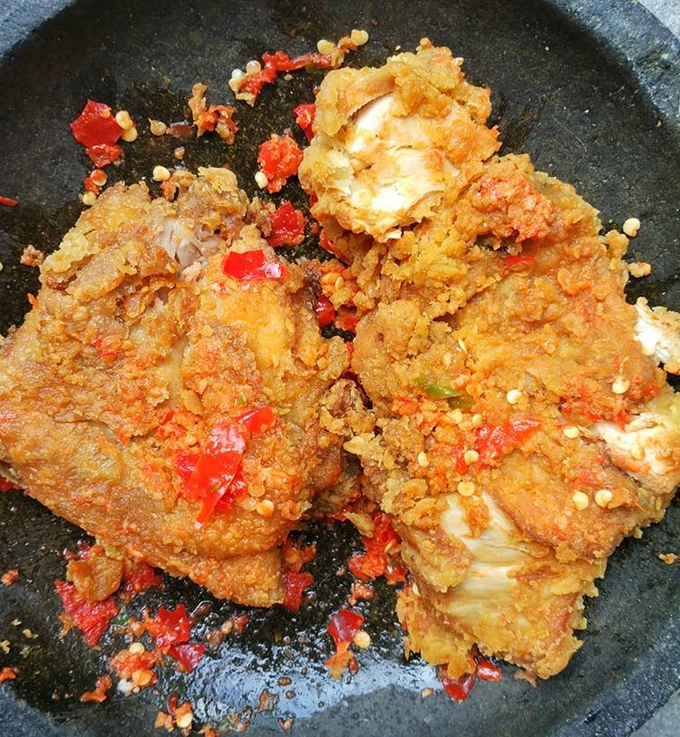
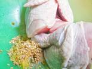
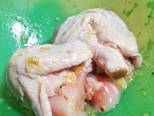
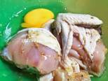
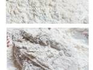
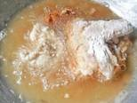
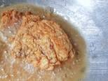
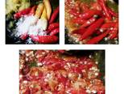
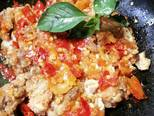

Resep membuat ayam geprek sederhana

Bahan-Bahan :
- 2 Potong ayam bagian paha dan dada
- 1 butir telur
- 5 sendok tepung terigu
- 3 siung bawang putih
- Merica dan garam secukupnya
- Minyak goreng secukupnya
- 1 batang daun kemangi
- 22 buah cabe rawit
- 2 Siung bawang putih, digoreng
- Garam gula secukupnya
1. Masukkan ayam. Tambahkan bawang putih halus, merica, dan garam

2. Remas-remas ayam,sampai bumbu tercampur dan terserap.
Tinggalkan selama kurang lebih 2 jam

3. Setelah bumbu meresap, masukkan 1 butir telur.
Kocok hingga semua permukaan ayam terlumuri telur

4. Siapkan tepung terigu dan tepung maizena, campurkan.
Lalu masukkan ayam yang telah dilumuri telur ke dalam tepung.
Pastikan semua permukaan ayam tertutupi tepung ya

5. Setelah minyak goreng panas, masukkan ayam.
Goreng ayam dengan api kecil agar ayam matang sampai di dalamnya.
Goreng sampai kuning keemasan lalu balik perlahan

6. Tunggu sampai kedua sisi ayam matang dan berubah menjadi kuning keemasan.
Lalu tiriskan

7. Sambal : masukkan bawang putih yang telah digoreng, cabe, garam,
ulek sampai halus.
Tambahkan 2 sendok minyak goreng panas bekas menggoreng ayam

8. Geprek ayam pada sambal. Berikan daun kemangi jika anda suka. Ayam geprek pedas siap disantap.
